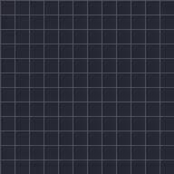

ڈرائنگ پروگریس

فری ہینڈ ڈرائنگ یا شکل کا آؤٹ لائن اسٹارٹ سے اینڈ تک بناتا ہے؛ بنتا دیکھنے کے لیے اینڈ کو 0% سے 100% تک کی فریم کریں اور بہترین نتیجے کے لیے فل بند اور اسٹروک والی شکلیں استعمال کریں۔
سیٹنگز
| سیٹنگ | قسم | رینج | ڈیفالٹ |
|---|---|---|---|
| اسٹارٹ | نمبر | 0% سے 100% تک | 0% |
| اینڈ | نمبر | 0% سے 100% تک | 100% |